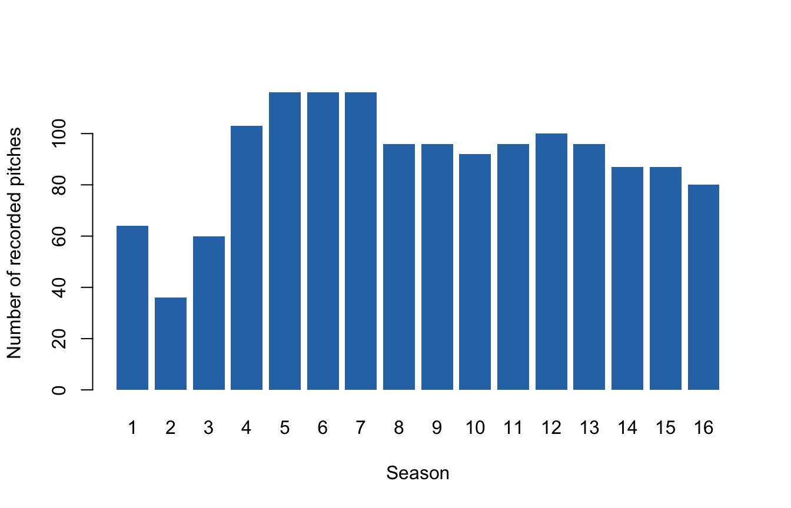
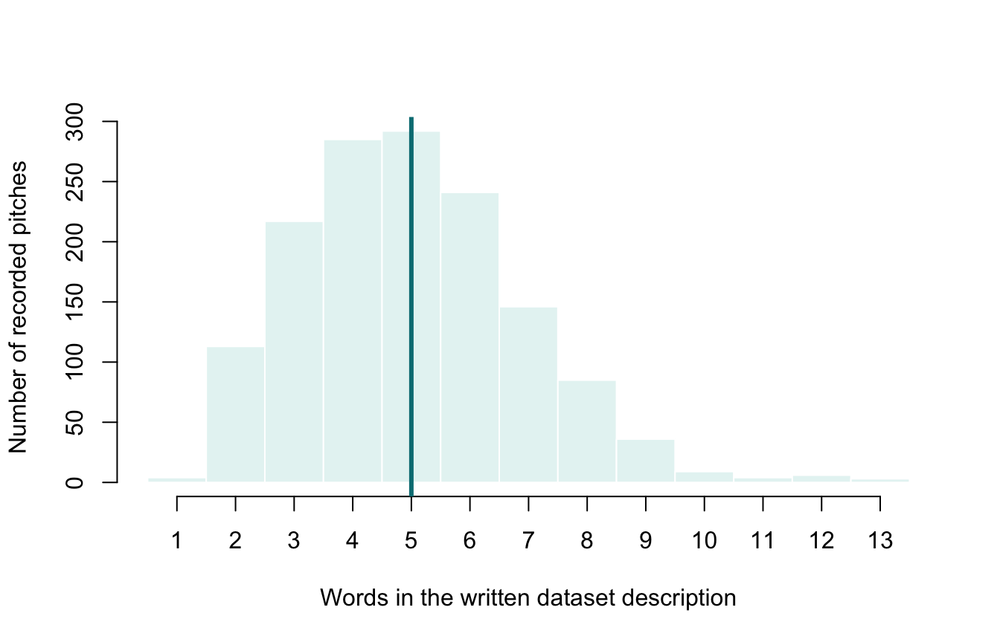
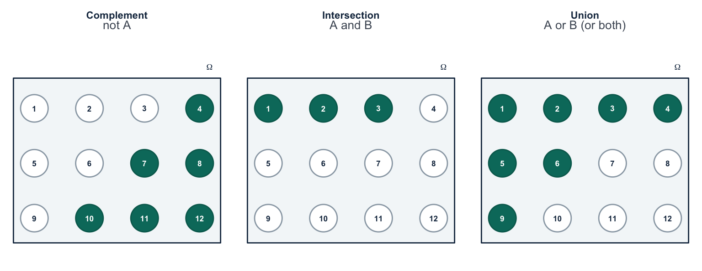
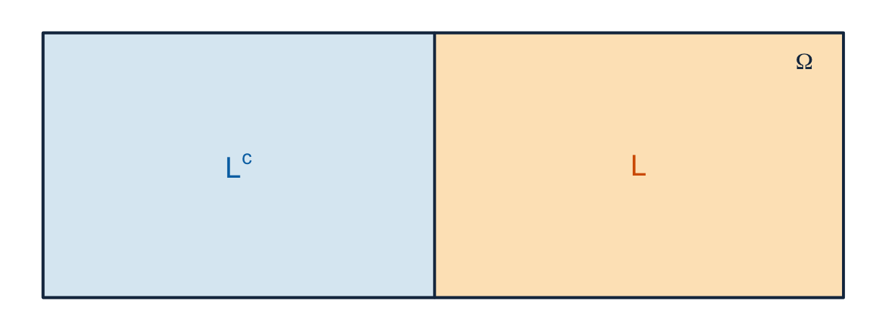

Lecture 2: Probability foundations and random variables
- read frequency and relative-frequency distributions;
- choose a bar chart or histogram and describe centre, spread, and shape;
- define a random experiment, outcome, sample space, and event;
- use complements, intersections, unions, and disjointness;
- state the probability axioms and distinguish empirical proportions from model probabilities;
- distinguish an outcome, a random variable, and a realised value.
Before class
Video preparation
Watch Sample Space
and Probability
Axioms, then watch
Definition of Random
Variables. Be ready to define an outcome, sample space, event, and
random variable and to state the three probability axioms. All links are also
listed in the
External Video Guide.
If set notation, complements, unions, or intersections are unfamiliar, review Mathematics Refresher: sets and events.
An empirical distribution records how often values occur in a dataset. For a categorical variable, a frequency table gives counts and a relative-frequency table gives proportions.
##
## 1 2 3 4 5 6 7 8 9 10 11 12 13 14 15 16
## 64 36 60 103 116 116 116 96 96 92 96 100 96 87 87 80##
## 1 2 3 4 5 6 7 8 9 10 11 12 13
## 0.044 0.025 0.042 0.071 0.080 0.080 0.080 0.067 0.067 0.064 0.067 0.069 0.067
## 14 15 16
## 0.060 0.060 0.056
The horizontal axis lists the discrete season categories; each bar’s height on the vertical count scale is the number of recorded pitches in that season. The later seasons contain more records, so an overall percentage gives those seasons more weight.
For a quantitative variable, a histogram groups nearby values into intervals.

The horizontal axis measures description length in words and the vertical axis counts pitches in each one-word interval. The teal vertical line marks the median. The distribution is mildly right-skewed: most descriptions contain 3–7 words, with a small number extending farther to the right. The median is 5 words.
If needed, review summary statistics and plots from Programming for E&BI.
In class
A probability model begins with possible outcomes
MIT explanation (review): 01.2 Sample Space.
Probability starts by specifying exactly what may happen. A probability model needs a process, a list of complete possible results, and events that describe which results matter for the question.
A random experiment is a process whose outcome is not known in advance. The word random does not mean “unstructured.” It means the model does not specify in advance which possible outcome will occur.
- An outcome, written \(\omega\), is one complete possible result.
- The sample space, written \(\Omega\), is the set of all possible outcomes.
- An event is a specified subset of \(\Omega\) to which the model assigns a probability. It occurs when the realised outcome belongs to that subset.
The distinction is easiest to read from the whole-to-part structure:
| Object | Question it answers | Shark Tank example |
|---|---|---|
| experiment | What is done? | Select one of the 1,441 records uniformly |
| outcome \(\omega\) | Which complete result occurred? | One complete selected pitch record |
| sample space \(\Omega\) | Which complete results were possible? | The set of all 1,441 records |
| event \(A\) | Which outcomes count as “yes” for this question? | The subset of records with an on-air deal |
For a single roll of a fair six-sided die,
\[ \Omega=\{1,2,3,4,5,6\}. \]
The event \(E=\{2,4,6\}\) means “an even result.” The outcome \(\omega=4\) belongs to \(E\), so \(E\) occurs when 4 is rolled. The number 4 is an outcome; the singleton set \(\{4\}\) is an event.
An empirical selection experiment
Define the experiment as select one of the 1,441 recorded pitches uniformly at random. The sample space is the set of 1,441 pitch records. Define:
- \(D\): the selected pitch reached an on-air deal;
- \(L\): the selected pitch appeared in Seasons 9–16.
Making the selection uniform means every record has probability \(1/1441\). Consequently, event probabilities equal relative frequencies in this fixed dataset. This does not imply the same probabilities for future entrepreneurs.
Combining events
Events are sets of outcomes. Set notation therefore gives us a precise way to describe how events are combined.
| Notation | Name | Meaning |
|---|---|---|
| \(A^c\) | complement | \(A\) does not occur |
| \(A\cap B\) | intersection | both \(A\) and \(B\) occur |
| \(A\cup B\) | union | \(A\), \(B\), or both occur |
| \(A\subseteq B\) | subset | every outcome in \(A\) is also in \(B\) |
| \(A\cap B=\varnothing\) | disjoint | \(A\) and \(B\) cannot occur together |
To make the notation concrete, suppose one number is selected at random from
\[ \Omega=\{1,2,\ldots,12\}. \]
Define \(A=\{1,2,3,5,6,9\}\) and \(B=\{1,2,3,4\}\). Each diagram below shows the same sample space. A green circle means that the outcome belongs to the event named above the panel.

Thus \(A^c=\{4,7,8,10,11,12\}\), \(A\cap B=\{1,2,3\}\), and \(A\cup B=\{1,2,3,4,5,6,9\}\). Notice that or includes outcomes that are in both events: \(1,2,3\) belong to the union as well as the intersection.
Disjoint does not mean independent. If two disjoint events both have positive probability, observing one makes the other impossible. Independence, introduced in Lecture 5, means that observing one event does not change the probability of the other.
Probability laws and their axioms
MIT explanation (review): 01.4 Probability Axioms.
A probability law assigns a number \(P(A)\) to each event \(A\). It must satisfy:
- Non-negativity: \(P(A)\ge 0\) for every event \(A\).
- Normalisation: \(P(\Omega)=1\).
- Countable additivity: for pairwise disjoint events \(A_1,A_2,\ldots\),
\[ P\left(\bigcup_{i=1}^{\infty} A_i\right) =\sum_{i=1}^{\infty} P(A_i). \]
The first two axioms set the probability scale: probability cannot be negative, and something in the sample space must occur. The third says that mutually exclusive routes can be added because no outcome is counted twice.
For a finite sample space with equally likely outcomes,
\[ P(A)=\frac{|A|}{|\Omega|}. \]
That ratio is a special case, not a universal definition. It applies because equal likelihood has been built into the model.
Rules derived from the axioms
MIT explanation (review): 01.5 Simple Properties of Probabilities.
Because \(A\) and \(A^c\) are disjoint and together form \(\Omega\),
\[ P(A^c)=1-P(A). \]
When \(A\) and \(B\) may overlap,
\[ P(A\cup B)=P(A)+P(B)-P(A\cap B). \]
The intersection is subtracted once because it was counted in both marginal probabilities.
A partition divides \(\Omega\) into events that do not overlap and together include every possible outcome. Each outcome belongs to exactly one part. For example, Seasons 1–8 and Seasons 9–16 partition the recorded pitches into an early-period event \(L^c\) and a late-period event \(L\).

The two coloured regions do not overlap, and together they fill the whole rectangle. Lecture 4 uses this idea to combine conditional probabilities from separate groups.
c(
P_D = mean(D),
P_L = mean(L),
P_D_and_L = mean(D & L),
P_not_D = mean(!D),
P_D_or_L_direct = mean(D | L),
P_D_or_L_rule = mean(D) + mean(L) - mean(D & L)
)## P_D P_L P_D_and_L P_not_D P_D_or_L_direct
## 0.6120749 0.5093685 0.3504511 0.3879251 0.7709924
## P_D_or_L_rule
## 0.7709924For example, \(P(D)=882/1441\approx0.612\) in the uniform record-selection experiment.
For example, “no on-air deal” is \(D^c\), “late-season and deal” is \(L\cap D\), and “late-season, deal, or both” is \(L\cup D\).
Empirical proportion or future probability?
MIT explanation (review): 01.10 Interpretations and Uses of Probabilities.
The symbol \(P(D)\) is meaningful only after the probability model is defined. For uniform selection from the file, it is exactly 882/1441. Calling it the probability that a future televised pitch reaches an on-air agreement adds assumptions:
- the future case belongs to a defined target population;
- selection into the show is comparable;
- the process is stable over time;
- “deal” retains the same definition.
Calling it the probability of completed investment would additionally change the outcome being predicted; completed investment is not recorded here.
From complete outcomes to numerical measurements
MIT explanation (review): 05.2 Definition of Random Variables.
An outcome is a complete result, but an analysis usually focuses on one numerical feature of that result. A random variable is the rule that extracts that number. Formally,
\[ X:\Omega\rightarrow\mathbb{R}. \]
Read the notation from left to right: \(X\) takes an outcome from the sample space \(\Omega\) and returns a real number.
| Symbol | Meaning |
|---|---|
| \(\omega\) | one complete outcome, such as one selected pitch record |
| \(X\) | the fixed measurement rule |
| \(X(\omega)\) | the number assigned by \(X\) to outcome \(\omega\) |
| \(x\) | a possible or realised numerical value of \(X\) |
For example, define \(X(\omega)=1\) when pitch \(\omega\) reached an on-air deal and \(X(\omega)=0\) otherwise. We could also define \(S(\omega)\) as its season and \(W(\omega)\) as its written-description word count. The same outcome therefore produces several measurements.
The rule \(X\) is defined before an outcome is selected. After selection, \(x=X(\omega)\) is its realised value. The variable is called random because its value is unknown before the outcome is observed, not because its definition changes.
A random variable is discrete when its possible values form a finite or countably infinite set. Its support is the set of values with positive probability. The support of the deal indicator is \(\{0,1\}\), while the support of season is \(\{1,\ldots,8\}\). Lecture 3 assigns probabilities to these possible values.
After class
Retrieval
- What is the difference between an outcome and an event?
- What is the difference between a random variable and a realised value?
- State the three probability axioms.
- Why is the equally-likely ratio a special case?
- What extra assumptions turn an empirical proportion into a forecast?
Check your answers
- An outcome is one possible complete result; an event is a specified set of outcomes.
- A random variable is a fixed function from outcomes to numbers; a realised value is the number produced for the observed outcome.
- Probabilities are non-negative, \(P(\Omega)=1\), and probabilities add over any countable collection of pairwise disjoint events.
- The ratio \(|A|/|\Omega|\) requires a finite sample space whose outcomes are equally likely.
- A forecast requires a defined target population and assumptions about selection, process stability, and a stable outcome definition.
Practice
In the uniform selection experiment, use \(P(D)=882/1441\), \(P(L)=734/1441\), and \(P(D\cap L)=505/1441\).
- Calculate and interpret \(P(D^c)\).
- Calculate and interpret \(P(D\cup L)\).
- Are \(D\) and \(D^c\) disjoint? Explain.
- Define a random variable \(S\) that records the season of the selected pitch. State its possible values.
- Define a deal indicator \(X\). Explain how the event \(D\) and the random variable \(X\) are related but not the same object.
Check your answers
- \(P(D^c)=1-882/1441=559/1441\approx0.388\): 38.8% of the records did not reach an on-air agreement.
- \(P(D\cup L)=(882+734-505)/1441=1111/1441\approx0.771\): 77.1% of the records are from Seasons 9–16, reached an on-air deal, or satisfy both conditions.
- They are disjoint because a record cannot simultaneously have and not have an on-air deal.
- Define \(S(\omega)\) as the season number of pitch record \(\omega\). Its possible values are \(\{1,2,\ldots,16\}\).
- Define \(X(\omega)=1\) when \(\omega\in D\) and \(X(\omega)=0\) otherwise. \(D\) is a set of outcomes; \(X\) is a function that assigns a number to every outcome. They are related by \(D=\{\omega:X(\omega)=1\}\).
Worked exam interpretation
Question. R reports mean(sharks$deal_on_show) = 0.612. Is this an
empirical proportion or a universal probability?
Check a model answer
It is first an empirical proportion: 882 of the 1,441 recorded pitches reached an on-air agreement. It is also the event probability in a model that selects one of those 1,441 records uniformly. Applying it to a future entrepreneur requires additional population, selection, stability, and outcome assumptions.
Continue to Lecture 3: Discrete distributions and expectation.
Formula sheet: Lecture 2 formulas.
For a more formal explanation, consult Nieuwenhuis, Statistical Methods for Business and Economics, Chapters 2–4 for empirical distributions and Chapters 6–8 for probability models and random variables.